„Așa arată un pian?”
Povestea Fabricii de Pian, spusă de cel care a pornit-o și a dus-o la capăt: Aurelian Epuraș, fost elev al Școlii de Muzică din Petroșani, întors acasă ca profesor, inițiatorul proiectului și președintele asociației.
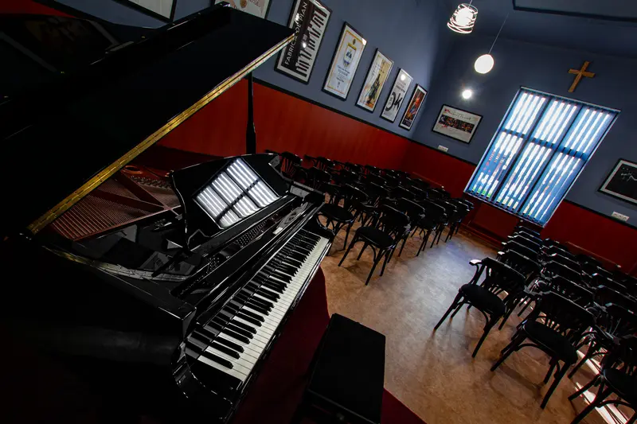
A existat un început. Acum putem spune, liniștiți și împliniți, „a fost odată…”. Și ce „odată”! Momentul acela când un sunet, un deget, o strălucire într-un întuneric zgomotos a pus laolaltă un suflet, două suflete… o comunitate. Una mică, dar care a reușit, notă cu notă, să așeze pe aceste meleaguri o fabrică. Fabrica de Pian.
O școală cu șase decenii de istorie
Școala de Muzică din Petroșani a fost înființată în 1961 și a devenit, din 1981, Secția de Muzică a Școlii Gimnaziale „I. G. Duca”. În toți acești ani a șlefuit talente: mulți dintre absolvenții ei au devenit, la rândul lor, profesori și oameni de cultură în toată țara. Un singur lucru i-a lipsit: un pian de concert, normal în orice școală, liceu sau conservator în care se studiază pianul.
„Așa arată un pian?”
Proiectul a fost, la început, dorința puternică a unui profesor de pian: Aurelian Epuraș, un om cu o pasiune nativă pentru muzică și cu „doi ochi jucăuși care nu-i stau în cap”, cum l-a descris chiar profesorul său de pian, domnul Ginel Petrescu.
Ca un arc peste timp, micul elev de acum 30 de ani, aflat în fața unei pianine de studiu, își întreba firesc profesorul: „Așa arată un pian?” Întors acasă, ca profesor de pian la aceeași școală de muzică, a primit aceeași întrebare de la o elevă cu bucle aurii, în prima ei oră de pian. Această istorie care se repeta i-a trezit o dorință greu de pus în cuvinte: să aducă în școală un pian de concert. O investiție nu doar într-un instrument, ci în copii, în școală și în comunitate.
Povestea, spusă de inițiator
„Din experiența dobândită în 13 ani ca pianist și profesor de pian în Franța, am știut că pot aduce un plus comunității mele, că pot munci cântând și că din concerte pot strânge banii necesari pentru acest pian de concert. Am simțit că mă pot baza pe prietenii mei muzicieni, pe profesorii din școală, pe artiștii locali și pe foștii elevi ai Școlii de Muzică. Mi-am propus să susținem 36 de concerte, câte unul în fiecare lună, timp de 36 de luni. Dar proiectul s-a împlinit în doar 12 luni.
După zeci de nopți în care m-am gândit cum ar trebui să funcționeze această fabrică în care urma să fie construit un singur pian, mi s-a revelat titlul: «Fabrica de Pian», deși știam că există doar fabrici de piane. Le-am împărtășit dorința celor mai apropiați colegi și prieteni și le-am spus încrezător:
Dacă nu avem un pian, îl vom construi. Vom fabrica un pian, centimetru cu centimetru.
Mi-au oferit din prima clipă sprijinul lor și am pornit împreună pe un drum care avea să ne surprindă plăcut pe fiecare. Au venit toți muncitorii potriviți: copiii și părinții lor, dascăli, oameni din comunitate, artiști locali și recunoscuți la nivel național, colegi din teatru, instituții bisericești, administrații locale, presă și mulți oameni cu suflet mare.
Pe 25 ianuarie 2019 a luat naștere Fabrica de Pian. Începutul, deși emoționant, nu a fost ușor. Dar am avut credință, iubire, dorință și pasiune. Muzica ne-a adus împreună, ne-a unit și ne-a arătat ce înseamnă calitatea umană. Și pot spune că, într-o perioadă scurtă, fabrica de pian a devenit o fabrică de prieteni.”
Kawai GX-2, primul din Valea Jiului
Acest pian de concert nu este un pian de serie. Este un Kawai GX-2 Grand Piano, fabricat în Japonia, la Hamamatsu, într-o fabrică în care din 1927 se construiesc unele dintre cele mai strălucite piane de concert din lume. În clipa în care a ajuns în orașul nostru, a intrat în istorie: este primul de acest fel din întreaga existență a Văii Jiului.
„Pentru elevii care se pregătesc pe pianinele de studiu din sala de clasă, să-și poată cânta piesele pe acest pian de concert va fi încununarea muncii lor. Pentru aceste clipe, acum știu că a meritat să aștept 30 de ani. Visul meu de mic elev pianist a devenit realitate, ca profesor, pentru toți elevii.”
O sală pe măsura pianului
Un pian unic trebuia să aibă o sală de concert pe măsură, iar un alt proiect s-a născut din primul. Alexandru Pruteanu, fost elev al Școlii „I. G. Duca”, azi arhitect și designer de interior, s-a oferit să o proiecteze. Zile și nopți, contra cronometru până la sosirea pianului, profesori de pian, directori, scenografi, electricieni, tâmplari, îngrijitori și ingineri au devenit o singură echipă, o familie.
Meritul acestui proiect este al comunității noastre, al tuturor celor care au rezonat cu arta și ni s-au alăturat sincer și necondiționat. Un sprijin important a venit de la Episcopia Devei și Hunedoarei și de la Comanderia nr. 32 Matei Corvin Petroșani.
O fabrică de prieteni
Proiectul acesta este o lecție prin puterea exemplului, puterea cuvântului și puterea artei. Este mărturia iubirii pentru muzică între generații: de la un fost elev devenit profesor, pentru elevii și profesorii Secției de Muzică din Petroșani. Și un omagiu adus întemeietorilor acestei școli, tuturor profesorilor și elevilor care i-au trecut pragul.
„Dragi copii, vă așteptăm cu bucurie să treceți pragul școlii noastre de pian și să vă lăsați purtați pe aripile muzicii.”
De aici a pornit totul.
Două filme de pe canalul Fabricii de Pian, unde sunt 210 clipuri cu elevii, concertele și oamenii proiectului. Tot canalul →

„Dacă nu avem un pian, îl vom construi”
Cei cărora Aurelian Epuraș le-a împărtășit primul ideea și care au spus „da” din prima clipă.
- prof. Cosmin Kiss
- prof. Adina Stan
- prof. Nicoleta Demeter
- prof. Ștefan Demeter
- prof. Camelia Ilina
- notar Liviu Gherghin
- avocat Adrian Stroia
- Cosmin Rădescu, managerul Teatrului Dramatic „Ion D. Sîrbu”
- primar Tiberiu Iacob Ridzi
Ambasadorii Fabricii de Pian
Profesori, părinți, artiști și oameni ai Văii Jiului care și-au pus numele și vocea în spatele proiectului.
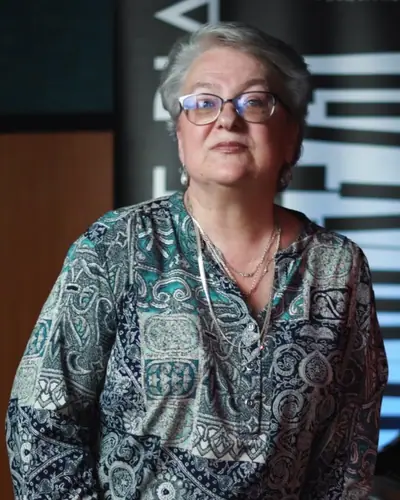
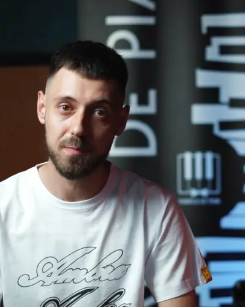
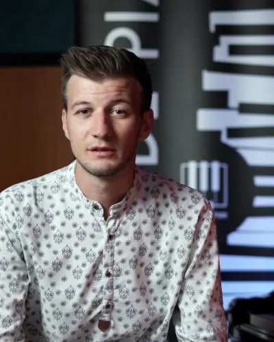
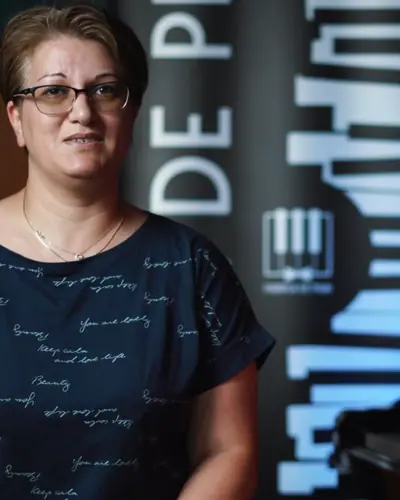
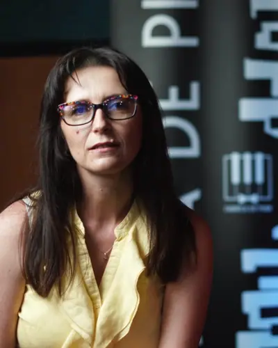
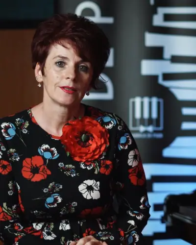
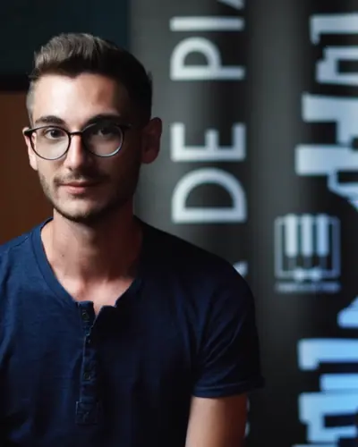
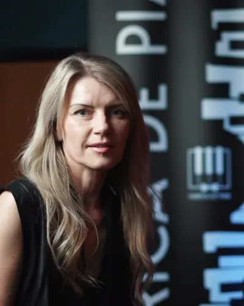
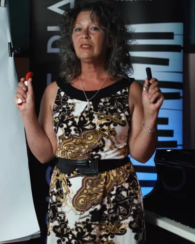
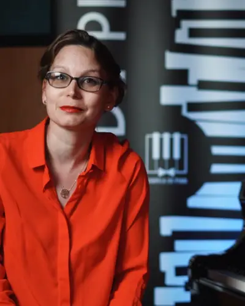
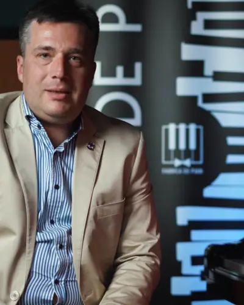
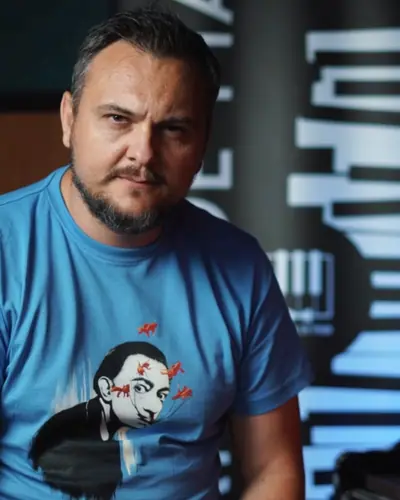
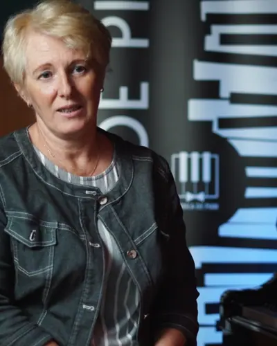
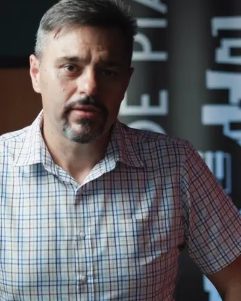
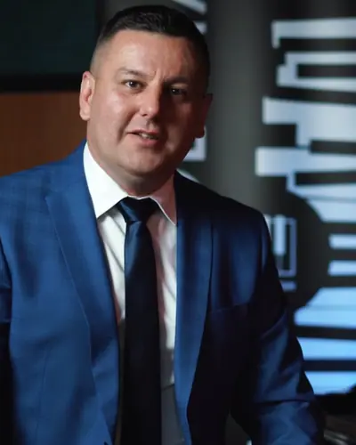
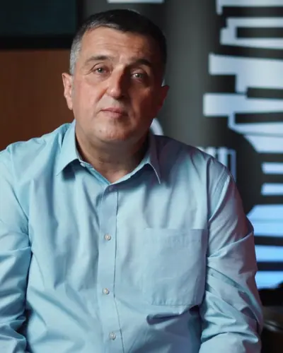
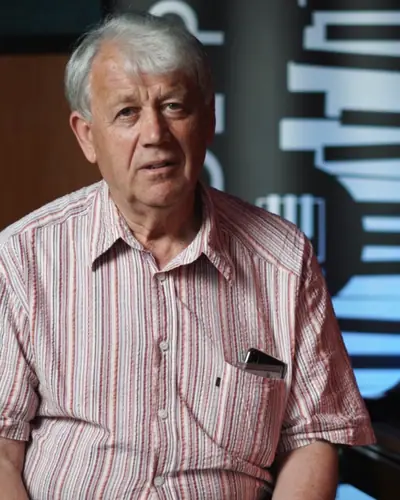
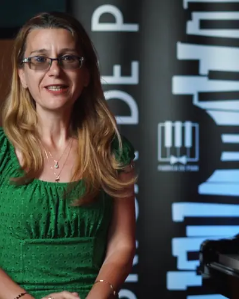
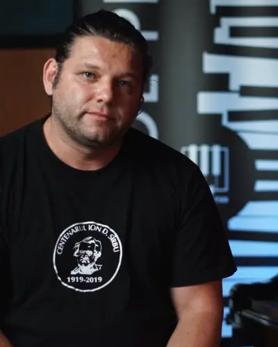
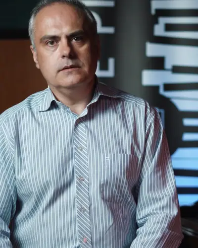
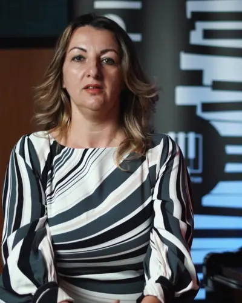
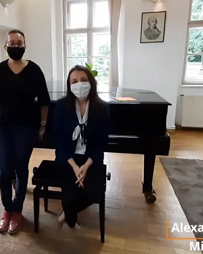
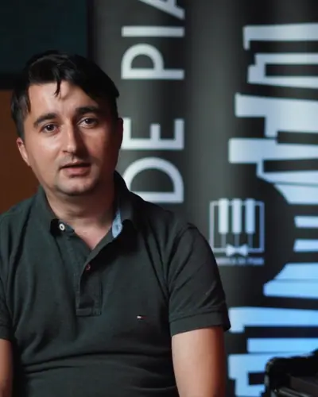
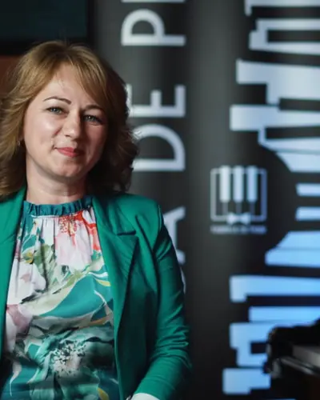
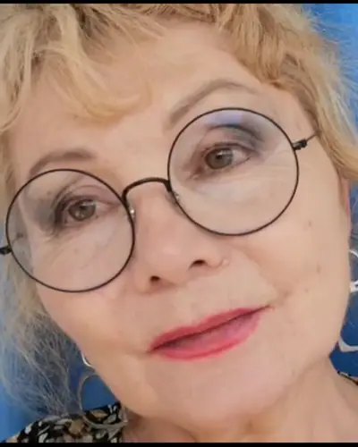
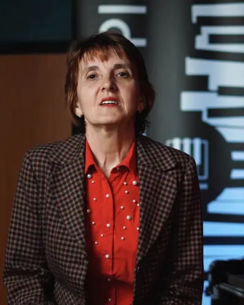
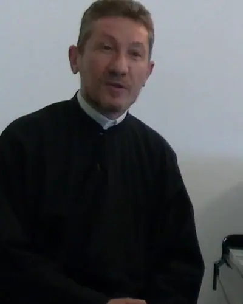
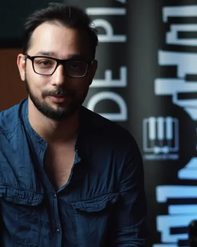
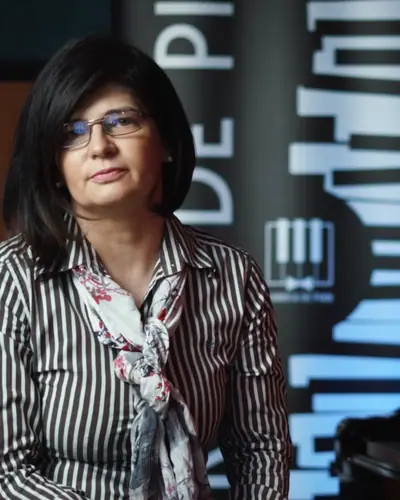
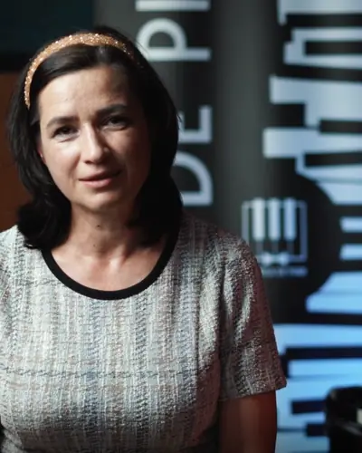
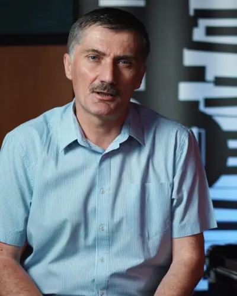
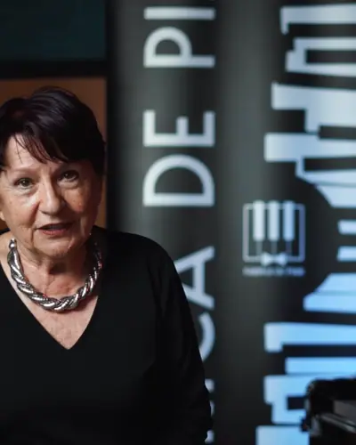
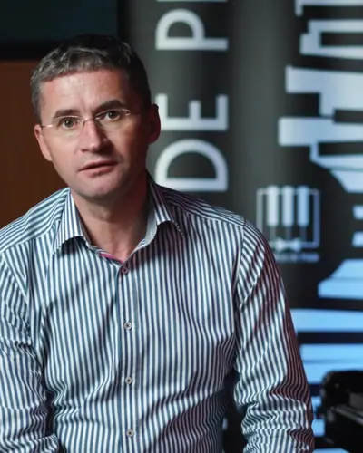
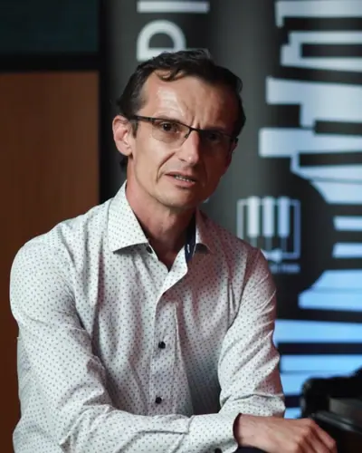
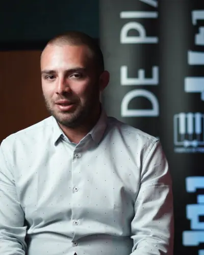
Cei mai de seamă „muncitori” din fabrică
Fără ei, pianul ar fi rămas un vis. Le mulțumim din suflet, lor și publicului care a umplut sălile.
Artiști și oameni de cultură
- Alexandra Glogojan
- Alexandru Cazan
- Alexandru Hotea
- Anca Ciolca
- Andrei Popa
- Adina Risipitu
- Alex Pruteanu
- Carmen Macavei
- Cătălin Stepa
- Claudia Maria Georgescu
- Claudia Șponor
- Corina Răducanu
- Cosmin Rădescu
- Cristian Preda
- Diana Mitrache
- Eugen Dumitrescu
- Mariana Ghicioi
- Marius Niculescu
- Mihaela Manciu
- Mihai Alexandru
- Mirela Vișan
- Natalia Kovaks Emoke
- Radu Chința
- Radu Tudosie
- Ramona Roșulescu
- Remus Henning
- Roland Toth
- Teodosie Cuciuc
- Tiberiu Vințan
- Laurențiu Vlad
Partenerii și sponsorii Fabricii de Pian →
Și, mai presus de toți, elevilor Secției de Muzică a Școlii Gimnaziale „I. G. Duca”, care au cântat la fiecare concert și au construit, cu muzica lor, pianul.